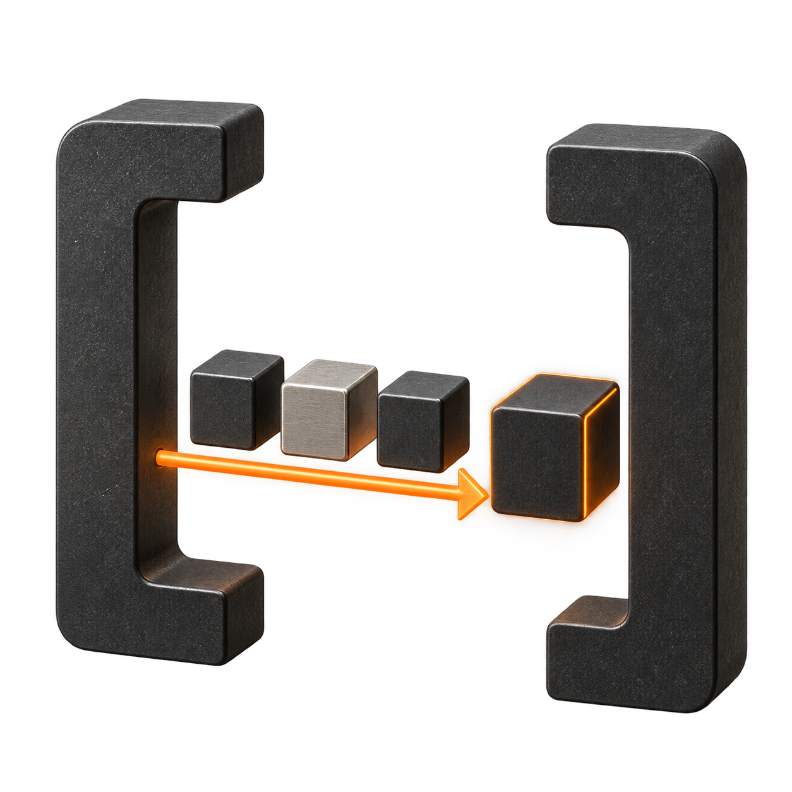

01
A stack you can inspect.
Choose a repository and Compose files. See services, Dockerfiles, dependencies, and destination checks before starting a deployment.
shop / mainEXAMPLE
YMLcompose.yamlBASE
YMLcompose.staging.yamlOVERRIDE
OPEN SOURCE. SELF-HOSTED. VISUAL.
Turn your pipeline into a picture you can act on. Build containers, review your Compose stack, and follow every stage to your infrastructure.
Your source. Your servers. Your call.
Add a human checkpoint to your pipeline. The next stage waits until the required approvals are recorded.
Read the guide01 / FROM REPOSITORY TO RUNTIME
Keep the source, the plan, and the outcome connected.
Choose the workflow that fits what you are shipping.
Choose a repository and Compose files. See services, Dockerfiles, dependencies, and destination checks before starting a deployment.
Connect build, test, push, approval, and deployment stages. Follow dependencies and open the logs for the step you need.
Keep a reviewed source revision fixed. Reinspect when you are ready to update it. Scope workloads with a deployment prefix and reference secrets from an Environment.
Understand the review flow02 / BRING YOUR INFRASTRUCTURE
Run the supported parts of your Compose stack on a configured target. Keep an existing database where it already lives.
Native stacks on the Cooker host, with service DNS and named volumes.
LOCAL HOSTDeployments and Services on an existing, configured cluster.
EXISTING CLUSTERA container service for each supported workload in your stack.
EXISTING AWS SETUPA supported single-container path on your configured GCP project.
EXISTING GCP SETUPCurrent App flow: one compute target per stack. Target support depends on configuration and Compose compatibility. See the supported scope ↗
03 / YOUR WORKSPACE, ON YOUR MACHINE
Start with a local look around. Bring your own infrastructure when you are ready to exercise real builds and deployments.
Read the quickstartgit clone --branch develop \
https://github.com/santapong/Cooker.git
cd Cooker
docker compose up --buildhttp://localhost:8080BUILT IN THE OPEN
The reviewed GitHub Compose workflow is implemented on develop and ready for UAT. Human and live cloud acceptance are pending. Source builds currently use a dev/UAT-only Docker path; the compatible production build path is still ahead.
04 / BEFORE YOU START
Developers and small teams who want a self-hosted, visual way to understand and run container workflows. Cooker currently has instance-wide roles; it does not provide isolated customer tenants.
You host Cooker and configure the infrastructure where your workloads run. Cooker coordinates the supported deployment flow. It does not provision your cloud accounts, clusters, networks, or managed databases.
Yes. A reviewed Compose App can replace a database service with an external binding. Connection values come from a linked Environment. You provide connectivity, authentication, and TLS; verify database access from the deployed application.
A reviewed Compose App stays pinned to its saved Git commit. Explicitly inspect the new revision and review it before updating. This reviewed workflow uses manual deployment.
Yes. Cooker is licensed under Apache 2.0. You can inspect the source, run it yourself, and contribute through the GitHub repository.
SEE WHAT YOU ARE SHIPPING.